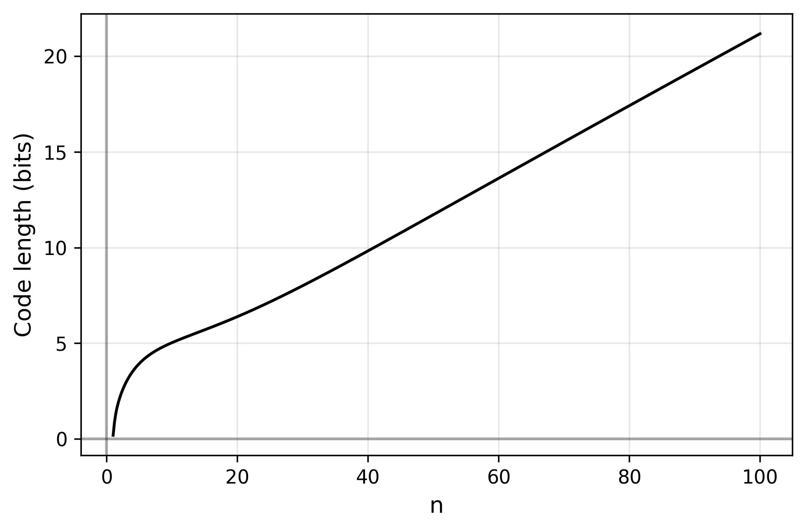

Arithmetic codes are pretty useful for compression. You can find a number of implementations of the algorithm online, some work with static models, some adaptive. Often, an abstract interface is defined so users can call the algorithm with your own model implementation. It makes sense for the algorithm to interface with a user-defined model through a vector of probabilities of the next-symbols, but one can find this limiting if trying to model very large domains like those of numbers.
In arithmetic codes, you usually think of the 1D space addressable by codes as divided between next-symbols based on their relative probabilities:
But nothing in the spirit of the technique prevents you from partitioning the space in infinitely many bins to make use of continuous probability distributions, as long as each bin can be assigned a finite code/interval and vice versa.
For instance, a Gaussian:
An implementation of arithmetic coding that works with any model would have to be more abstract than what you typically find online. The usually included logic for resolving the categorical CDF (i.e. the quantile function) is replaced with an abstract interface for any distribution that can repeatedly truncate at given cumulative probabilities until a specific bin is resolved. Here is my implementation in Rust:
We use this algorithm to verify the ability of Gaussian distributions to encode values compactly.
Why (not) Gaussians
Why this kind of distribution in the first place? The short answer is that (A) there aren’t that many other good options and (B) it turns out they have a bunch of neat properties that make them special. A short list would include the central limit theorem, the fact that they have maximum entropy given mean and variance, that they are closed under intersection, conditioning, all while generalizing to multiple dimensions.
So where might things go wrong? For our present purposes it would be sufficient to demonstrate that a Gaussian Maximum Likelihood Estimation (MLE) of a dataset can exhibit, for the bins corresponding to each number within the set:
sufficiently high likelihood (so that the codes are reasonably small), and
a computable interval derived through successive truncations of the probability distribution.
Of course you can break both of these conditions if you select a small enough bin size, so we assume only a reasonable limit to the amount of precision per number (e.g. on the order of e.g. 32 or 64 bits).
We first address the potential theoretical limitation (1) and follow with the implementation details (2).
Worst Likelihood Analysis
Which distribution of data produces the lowest likelihoods in its Gaussian MLE? Presumably, those that are the most dissimilar from the bell shape of the Gaussian PDF, in particular where you end up with data far off in the tails. Since the mapping from datasets to the Gaussian MLE has scale, location and count invariance, there are only a few corner cases to examine:
The unimodal case is not problematic for our uses as long as you implement the logic to handle it. It is a “degenerate” Gaussian, (a.k.a. Dirac delta) with zero variance, infinite probability density at the mode and zero probability everywhere else, but that just means the code length for each value is zero and only the message length has to be encoded.
The bimodal case is hardly an issue either and has significant probability density at the two modes no matter how “separated” you make them.
The outlier case is the only one where the likelihood of a datapoint can fall really low. If all but one point have non-significant variance around a point, the probability density at that outlier point can be prohibitively low. So how bad can it get?
Outlier Likelihood
The Gaussian MLE of a set of \(n\) values \(\{x_0, x_1, x_2, ...\}\) has the parameters:
\[\mu = \frac{\sum x}{n} ~~~~~~~~~~~~ \sigma^2 = \frac{\sum (x - \mu)^2}{n}\]
Another formulation of variance (which also happens to be the more numerically stable) is:
\[\sigma^2 = \frac{\sum x^2}{n} - \frac{(\sum x)^2}{n^2}\]
or even:
\[\mu = \frac{s_1}{s_0} ~~~~~~~~~~~~ \sigma^2 = \frac{s_2}{s_0} - \frac{(s_1)^2}{(s_0)^2}\]
where the only parameters are sums of the values raised to a power:
\[s_i = \sum{x^i}\]
With this formulation we can model the probability density at the outlier by setting the majority at \(0\) and the outlier at \(1\) (by invariance, this is representative of any outlier case modulo a constant factor):
\[\begin{array}{|l|c|c|c|} \hline \text{Population} & s_0 & s_1 & s_2 \\ \hline \{0,1\} & 2 & 1 & 1 \\ \hline \{0,0,1\} & 3 & 1 & 1 \\ \hline \{0,0,0,1\} & 4 & 1 & 1 \\ \hline \{0,0,...,0,1\} & n & 1 & 1 \\ \hline \end{array}\]
Then we have \(s_1 = s_2 = 1\). We substitute \(\mu\) and \(\sigma^2\) in the PDF to get a function of \(n\):
\[\begin{align}\mathrm{pdf}(x) &= \frac {1}{\sqrt {2\pi \sigma ^{2}}}e^{-{\frac {(x-\mu )^{2}}{2\sigma ^{2}}}}\\ \mathrm{pdf}(1) &= \frac{1}{\sqrt {\frac{2\pi}{n} - \frac{2\pi}{n^2}}}e^{-\frac{(n-1)^2}{2n-2}} \end{align}\]
Which looks like

which drops pretty quickly (exponentially quickly), but code length only grows in one over the logarithm of the probability so:
Which is a pretty unambiguous \(0.5n\) towards infinity.
So it looks like the code length of the outlier of a Gaussian only grows in \(O(n)\) of the size of the data set, which is only as bad as the performance of the uniform distribution of fixed-length codes.
Now, a full account of the performance of the distribution also has to take into account the code lengths of non-outliers, although we only expect their likelihood to grow (and their code length to shrink) with increasing \(n\). For completeness, computing the sum of code lengths using proper probability intervals (not density) on the CDF, with bin size of \(0.2\), in base 2 (bits), we show the total code length only grows sub-linearly w.r.t. \(n\) in this outlier “worst case”:

where computations past \(n = 80\) fail because of underflow of the
default CDF function in numpy, which is understandable as this places
our sampled value \(1\) at over \(80\) standard deviations off the mean.
Numerically Stable Functions
The quantile function for Gaussians is continuous, one-to-one, monotone and has finite value everywhere except at \(0 \mapsto -\infty\) and \(1 \mapsto \infty\).
For our application, what’s important is that repeatedly splitting in
half an interval of the probability mass down to any symbol to encode
happens with constant progress (i.e. the middle of any interval cannot
be equal to either boundaries) and no overflow to any infinity. This
reflects on the CDF and quantile by requiring the following: any two
bounds \(a,b\) such that \(0<a<b<1\) and where both bounds are not already
within the bounds of a symbol, then the middle point quantile(cdf(a) + 0.5*(cdf(b) - cdf(a))) must be strictly greater than a and strictly
less than b. If it is not, encoding becomes impossible.
An easy measure to ensure progress might be to fall back to linear interpolation whenever the call to the quantile function runs out of precision, assuming local linearity. While this is a reasonable approximation in the central bulk of the distribution, it fails in the tails.
To see why, consider the PDF and its derivative:
While both flatten out at the tails, for any given interval in the tails, the relative difference becomes greater the further away you move from the center. To see this, normalize the (absolute) derivative to the value of the function:
That is, the tails may be absolutely flat, but they become relatively steeper the further away you go. Another way to demonstrate this is by blowing up the PDF at different scales (here, successive factors of 10):
which makes it clear we cannot rely on any “flatness” in the tails. We are forced to find an analytic or at least numeric solution.
The Right Way
Like is usually the case in probability, the solution to numerical instability is found in the log-domain. This gives us two analogous functions for the cumulative probability with more manageable shapes:
Furthermore, we can model all right tail calculations by using the left’s and exploit the symmetry of the Gaussian PDF. This leaves us with two almost linear curves.
Fortunately, we are not the first to reach this point of the
journey. SciPy has well documented and precise polynomial approximations
of the log-CDF
log_ndtr
(source)
and quantile-exp
ndtri_exp
(source). This
affords us the precise interpolations on the probability mass of the
Gaussian we require, at least for now.